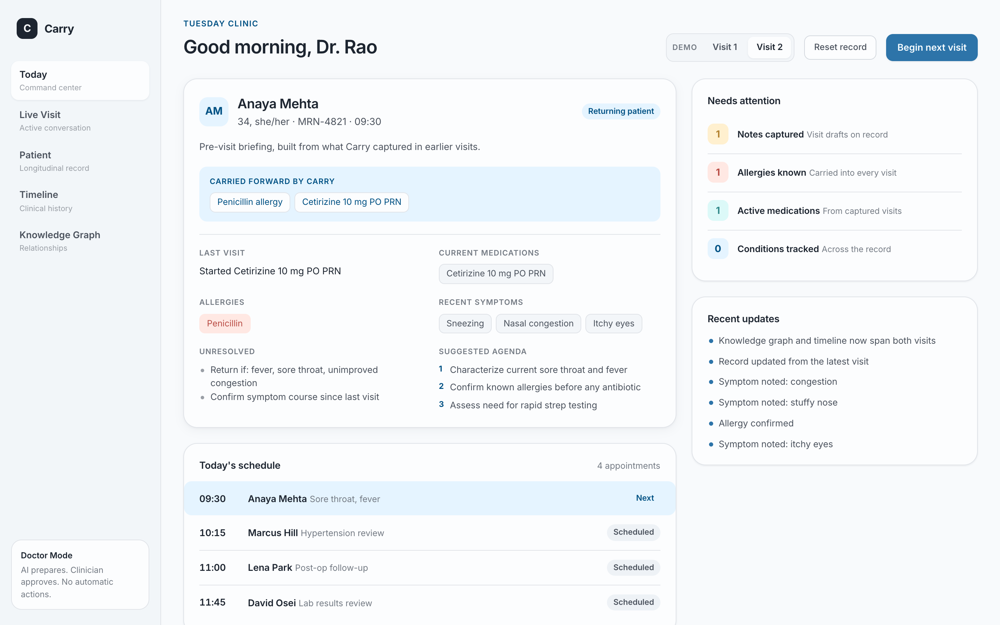
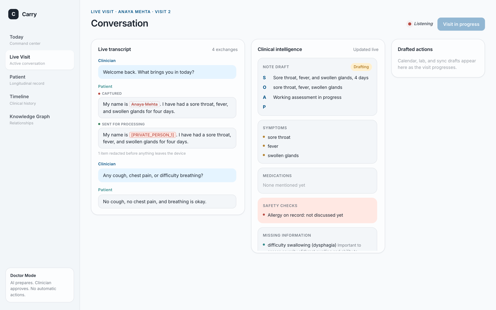
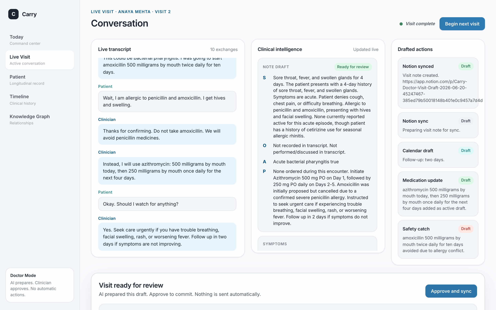
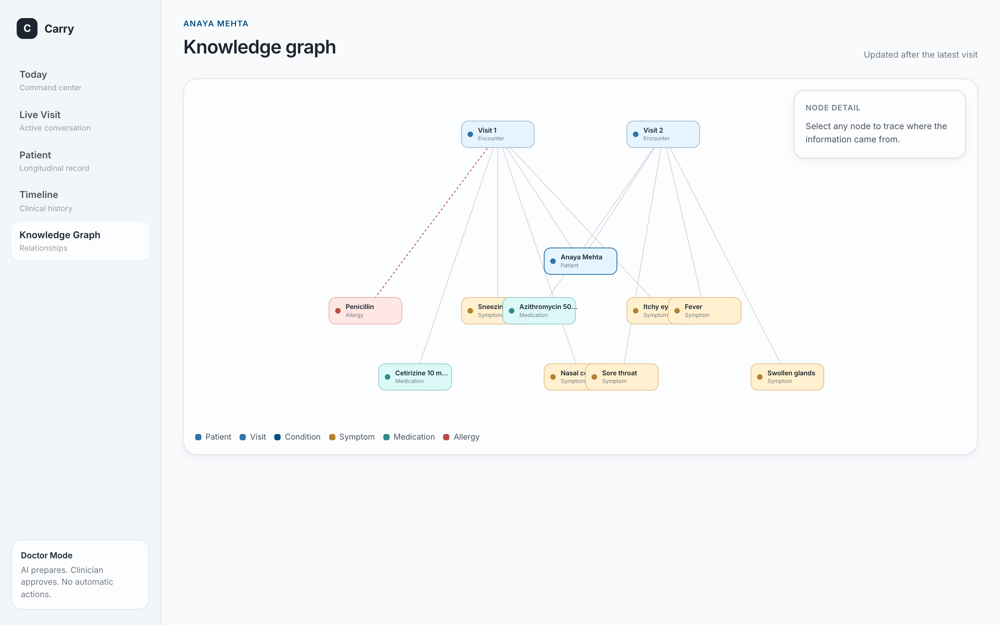

Carry listens during the visit, privacy-filters every word on device, drafts the note, and remembers what matters across visits, so the next conversation starts where the last one ended.
Sees 25 to 35 patients a day. Returning patients, new patients, overlapping histories.
Two costs sit on every clinician. The administrative load that follows each visit, and the risk that critical context from earlier visits does not surface at the moment it matters.
The note is drafted, the follow-up is ready, and the allergy is remembered for next time.
A returning patient. The briefing is built only from what Carry captured in earlier visits, with known allergies and medications carried forward.

An antibiotic is proposed, the patient states a penicillin allergy, and Carry strikes the unsafe drug, flags the conflict, and tracks the safe alternative, as it happens.

SOAP note, medication decision trail, coding suggestions, and a follow-up plan. Every item is a draft that requires clinician sign-off before anything is final.

Every captured fact is wired to the visit where Carry learned it. The graph and timeline are built from real stored memory, not a fixed layout, and grow with each visit.

The dashboard shows both blocks side by side during the live visit, so the de-identification is auditable, not assumed.
Carry is built as a generic core with profession packs. Nothing in the architecture requires a public cloud, which makes on-premise and private deployment a configuration choice, not a rewrite.
The next profession pack reuses the entire core. Only the outputs, prompts, and memory schema change.
The note, the coding, and the follow-up are drafted before the clinician leaves the room.
What was learned is carried forward, so a known allergy surfaces at the right moment.
Privacy-first by construction, and able to run entirely inside the clinic.